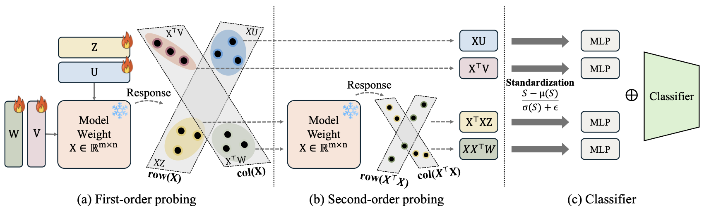

Overview of MVProbe. MVProbe extracts multiple complementary views of weight matrices through first- and second-order branches, aggregating them into a unified probe that captures information missed by a single linear projection.
Predicting properties of neural networks directly from their weights is a powerful tool for understanding and managing populations of models, but existing linear probes capture only a fraction of the information encoded in weight space. We propose MVProbe, a multi-view probing framework that combines first- and second-order weight statistics through a small set of view-specific branches. By aggregating complementary perspectives on the same weights, MVProbe substantially improves both discriminative classification on the Model Jungle benchmark (ResNet, SupViT, MAE, DINO fine-tunes) and generative LoRA identification on Stable Diffusion adapters (SD_200 and SD_1k). MVProbe establishes a new state of the art across both regimes while remaining a lightweight probe that does not require end-to-end fine-tuning of the underlying weights.
Linear probes that operate on weights as flat vectors lose information about how channels interact across layers. MVProbe addresses this with multiple views of each weight matrix \(W\): a direct view (\(W\)), input/output Gram views (\(W^\top W\), \(W W^\top\)), and mixed views. Each view is processed by a lightweight branch and the resulting representations are aggregated for the downstream prediction task.
We instantiate MVProbe for two regimes: discriminative classification of fine-tuning class on the Model Jungle benchmark, and generative identification of the LoRA-conditioning class on Stable Diffusion adapters. In both regimes the same multi-view backbone outperforms strong baselines, including ProbeX and its scaled variants.
Accuracy (%), mean±std over seeds 1–5 on the Model Jungle benchmark.
| Method | ResNet | SupViT | MAE | DINO |
|---|---|---|---|---|
| StatNN | 55.20 | 55.80 | 54.83 | 55.69 |
| ProbeGen | 78.27 | 78.48 | 70.68 | 61.26 |
| ProbeX | 81.61±1.29 | 88.08±0.39 | 77.11±0.14 | 72.54±0.18 |
| ProbeX (×4) | 87.16±0.26 | 90.33±0.31 | 77.26±0.12 | 73.25±0.21 |
| MVProbe (Ours) | 92.24±0.25 | 92.33±0.37 | 81.62±0.15 | 78.29±0.31 |
In-distribution and zero-shot accuracy on SD_200 and SD_1k LoRA adapters (mean±std over seeds 1–5, layer 46).
| Method | In-Distribution Acc | Zero-shot Acc |
|---|---|---|
| ProbeX | 98.48±0.48 | 94.01±0.77 |
| ProbeX (×4) | 97.72±0.50 | 93.53±1.99 |
| MVProbe (Ours) | 99.80±0.00 | 95.53±0.65 |
| Method | In-Distribution Acc | Zero-shot Acc |
|---|---|---|
| ProbeX | 35.75±2.44 | 52.42±2.48 |
| ProbeX (×4) | 32.46±3.08 | 51.14±3.88 |
| MVProbe (Ours) | 97.88±0.37 | 97.96±0.29 |
@inproceedings{heo2026mvprobe,
title = {What Linear Probes Miss: Multi-View Probing for Weight-Space Learning},
author = {Heo, Eunwoo and Seo, Kyungwook and Yoo, Jaejun},
booktitle = {Proceedings of the 43rd International Conference on Machine Learning},
year = {2026},
series = {Proceedings of Machine Learning Research},
publisher = {PMLR}
}